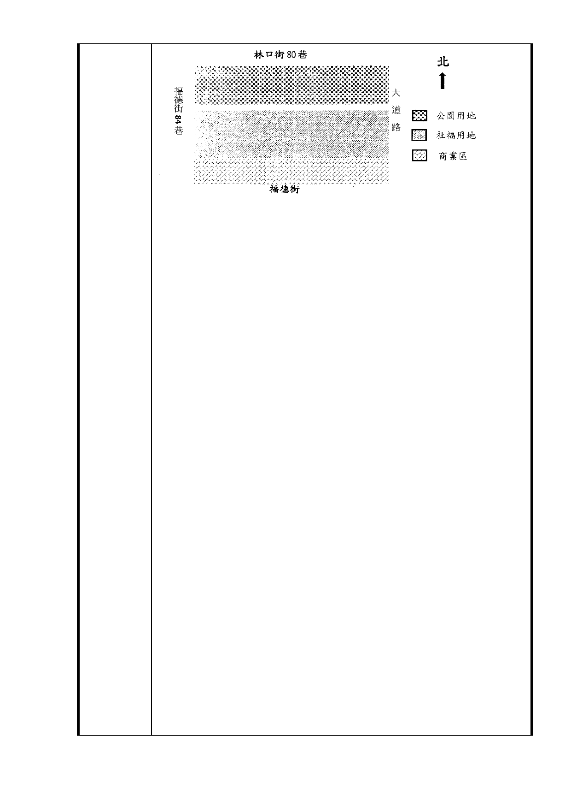

都市計畫設計之缺點：
1. 原規劃公園位置之穿透性及可親性不佳，這是林俊興委員的
意見。（註二）
2. 原規劃公園似為南基地之中庭，這是台北市公園路燈工程管
理處詹育齊幹事的意見（註三）。公園由商業用地及社福用
地獨攬。
3. 大道路側及林口街 80 巷側至公園活動之可及性較差。
4. 社福用地的居民距離捷運出口較遠，尤其對社福用地的老人
更是不方便。
5. 原先廣慈 BOT 開發案樹木保護委員會第 27 次幹事會議建議
保留之 A1、A2 樹群恐不保。（註四）
6. 原來每天在廣慈四週人行道慢跑愛運動的居民沒有地方跑
了。
7. 蓋在社福用地的高聳建物，對林口街 80 巷公寓住宅衝擊很
大，因為林口街 80 巷巷寬只有 8M，而且公寓住宅就位在廣
慈園區的北向，完全曬不到太陽。
（本圖）設計之優點：
1. 公園之開放性、穿透性及可親性良好。公園離商業區較遠，
不受噪音、油煙、汙濁空氣影響。
2. 公園屬於商業用地、社福用地及週遭居民所共享。
3. 大道路側、林口街 80 巷側及福德街 84 巷側所有居民至公園
活動之可及性良好。
4. 社福用地的居民距離捷運出口較近，尤其對社福用地的老人
更是方便。老人去坐捷運、去公園四週散步都很近。
5. 原先廣慈 BOT 開發案樹木保護委員會第 27 次幹事會議建議
保留之 A1、A2 樹群可以保留。（註三）
6. 原來每天在廣慈四週人行道慢跑愛運動的居民，可以沿著公
園四週慢跑，老人也可以沿著公園四週散步。
基於上述優缺點比較，建議台北市政府將公園移進入社福用地
，而社福用地移入公園用地，這樣才能提升地區生活環境品質
。
- 32 -